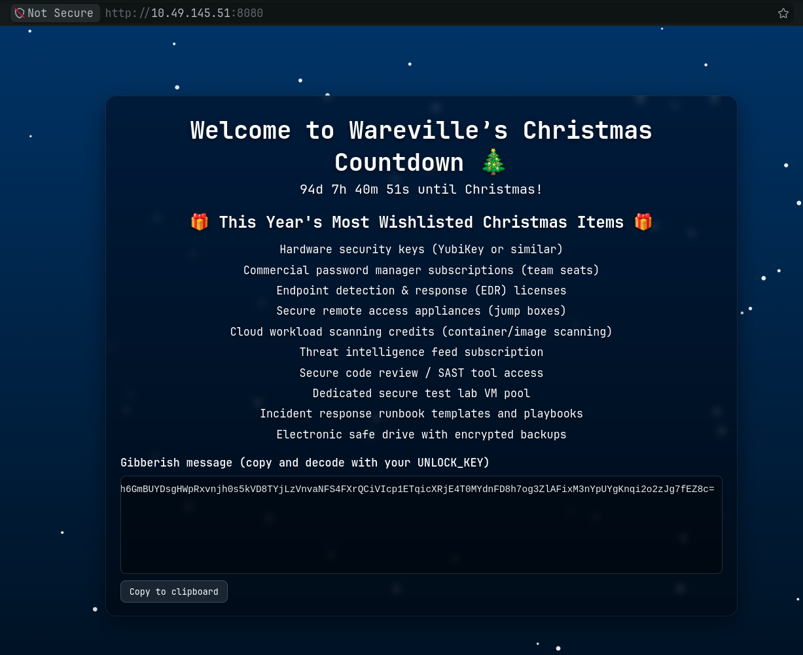

eddi_knapp@tbfc-web01:~$ ls -la
total 120
drwxr-x--- 18 eddi_knapp eddi_knapp 4096 Sep 21 09:59 .
drwxr-xr-x 6 root root 4096 Oct 10 2025 ..
-rw-r--r-- 1 eddi_knapp eddi_knapp 220 Feb 25 2020 .bash_logout
-rw-r--r-- 1 eddi_knapp eddi_knapp 3797 Nov 11 2025 .bashrc
-rw-r--r-- 1 eddi_knapp eddi_knapp 3797 Nov 11 2025 .bashrc.bak
drwxrwxr-x 3 eddi_knapp eddi_knapp 4096 Nov 30 2025 .cache
drwx------ 2 eddi_knapp eddi_knapp 4096 Oct 9 2025 .config
drwx------ 3 eddi_knapp eddi_knapp 4096 Sep 21 09:49 .gnupg
-rw------- 1 eddi_knapp eddi_knapp 68 Oct 10 2025 .image_meta
-rw------- 1 eddi_knapp eddi_knapp 20 Sep 21 09:59 .lesshst
drwxrwxr-x 4 eddi_knapp eddi_knapp 4096 Nov 30 2025 .local
-rw------- 1 eddi_knapp eddi_knapp 19 Nov 11 2025 .pam_environment
-rw------- 1 eddi_knapp eddi_knapp 19 Nov 11 2025 .pam_environment.bak
-rw-r--r-- 1 eddi_knapp eddi_knapp 833 Nov 11 2025 .profile
-rw-r--r-- 1 eddi_knapp eddi_knapp 833 Nov 11 2025 .profile.bak
drwxrwxr-x 2 eddi_knapp eddi_knapp 4096 Dec 1 2025 .secret
drwx------ 3 eddi_knapp eddi_knapp 4096 Nov 11 2025 .secret_git
drwx------ 3 eddi_knapp eddi_knapp 4096 Oct 9 2025 .secret_git.bak
-rw------- 1 eddi_knapp eddi_knapp 7167 Nov 11 2025 .viminfo
drwxr-xr-x 2 eddi_knapp eddi_knapp 4096 Oct 10 2025 Desktop
drwxr-xr-x 2 eddi_knapp eddi_knapp 4096 Nov 14 2025 Documents
drwxr-xr-x 2 eddi_knapp eddi_knapp 4096 Oct 10 2025 Downloads
drwxr-xr-x 2 eddi_knapp eddi_knapp 4096 Oct 9 2025 Music
drwxr-xr-x 2 eddi_knapp eddi_knapp 4096 Oct 10 2025 Pictures
drwxr-xr-x 2 eddi_knapp eddi_knapp 4096 Oct 9 2025 Public
drwxr-xr-x 2 eddi_knapp eddi_knapp 4096 Oct 9 2025 Templates
drwxr-xr-x 2 eddi_knapp eddi_knapp 4096 Oct 9 2025 Videos
drwxrwxr-x 2 eddi_knapp eddi_knapp 4096 Nov 11 2025 fix_passfrag_backups_20251111162432
-rw-rw-r-- 1 eddi_knapp eddi_knapp 429 Oct 9 2025 wget-log
eddi_knapp@tbfc-web01:~$ cat .bashrc
# ~/.bashrc: executed by bash(1) for non-login shells.
# see /usr/share/doc/bash/examples/startup-files (in the package bash-doc)
# for examples
# If not running interactively, don't do anything
case $- in
*i*) ;;
*) return;;
esac
# don't put duplicate lines or lines starting with space in the history.
# See bash(1) for more options
HISTCONTROL=ignoreboth
# append to the history file, don't overwrite it
shopt -s histappend
# for setting history length see HISTSIZE and HISTFILESIZE in bash(1)
HISTSIZE=1000
HISTFILESIZE=2000
# check the window size after each command and, if necessary,
# update the values of LINES and COLUMNS.
shopt -s checkwinsize
# If set, the pattern "**" used in a pathname expansion context will
# match all files and zero or more directories and subdirectories.
#shopt -s globstar
# make less more friendly for non-text input files, see lesspipe(1)
[ -x /usr/bin/lesspipe ] && eval "$(SHELL=/bin/sh lesspipe)"
# set variable identifying the chroot you work in (used in the prompt below)
if [ -z "${debian_chroot:-}" ] && [ -r /etc/debian_chroot ]; then
debian_chroot=$(cat /etc/debian_chroot)
fi
# set a fancy prompt (non-color, unless we know we "want" color)
case "$TERM" in
xterm-color|*-256color) color_prompt=yes;;
esac
# uncomment for a colored prompt, if the terminal has the capability; turned
# off by default to not distract the user: the focus in a terminal window
# should be on the output of commands, not on the prompt
#force_color_prompt=yes
if [ -n "$force_color_prompt" ]; then
if [ -x /usr/bin/tput ] && tput setaf 1 >&/dev/null; then
# We have color support; assume it's compliant with Ecma-48
# (ISO/IEC-6429). (Lack of such support is extremely rare, and such
# a case would tend to support setf rather than setaf.)
color_prompt=yes
else
color_prompt=
fi
fi
if [ "$color_prompt" = yes ]; then
PS1='${debian_chroot:+($debian_chroot)}\[\033[01;32m\]\u@\h\[\033[00m\]:\[\033[01;34m\]\w\[\033[00m\]\$ '
else
PS1='${debian_chroot:+($debian_chroot)}\u@\h:\w\$ '
fi
unset color_prompt force_color_prompt
# If this is an xterm set the title to user@host:dir
case "$TERM" in
xterm*|rxvt*)
PS1="\[\e]0;${debian_chroot:+($debian_chroot)}\u@\h: \w\a\]$PS1"
;;
*)
;;
esac
# enable color support of ls and also add handy aliases
if [ -x /usr/bin/dircolors ]; then
test -r ~/.dircolors && eval "$(dircolors -b ~/.dircolors)" || eval "$(dircolors -b)"
alias ls='ls --color=auto'
#alias dir='dir --color=auto'
#alias vdir='vdir --color=auto'
alias grep='grep --color=auto'
alias fgrep='fgrep --color=auto'
alias egrep='egrep --color=auto'
fi
# colored GCC warnings and errors
#export GCC_COLORS='error=01;31:warning=01;35:note=01;36:caret=01;32:locus=01:quote=01'
# some more ls aliases
alias ll='ls -alF'
alias la='ls -A'
alias l='ls -CF'
# Add an "alert" alias for long running commands. Use like so:
# sleep 10; alert
alias alert='notify-send --urgency=low -i "$([ $? = 0 ] && echo terminal || echo error)" "$(history|tail -n1|sed -e '\''s/^\s*[0-9]\+\s*//;s/[;&|]\s*alert$//'\'')"'
# Alias definitions.
# You may want to put all your additions into a separate file like
# ~/.bash_aliases, instead of adding them here directly.
# See /usr/share/doc/bash-doc/examples in the bash-doc package.
if [ -f ~/.bash_aliases ]; then
. ~/.bash_aliases
fi
# enable programmable completion features (you don't need to enable
# this, if it's already enabled in /etc/bash.bashrc and /etc/profile
# sources /etc/bash.bashrc).
if ! shopt -oq posix; then
if [ -f /usr/share/bash-completion/bash_completion ]; then
. /usr/share/bash-completion/bash_completion
elif [ -f /etc/bash_completion ]; then
. /etc/bash_completion
fi
fi
export PASSFRAG1="3ast3r"
eddi_knapp@tbfc-web01:~$ tree -a
.
├── .bash_logout
├── .bashrc
├── .bashrc.bak
├── .cache
│ ├── motd.legal-displayed
│ └── thumbnails
│ ├── thumb_1.png
│ ├── thumb_2.png
│ ├── thumb_3.png
│ └── thumb_4.png
├── .config
│ ├── user-dirs.dirs
│ └── user-dirs.locale
├── .gnupg
│ ├── S.gpg-agent
│ ├── S.gpg-agent.browser
│ ├── S.gpg-agent.extra
│ ├── S.gpg-agent.ssh
│ ├── private-keys-v1.d
│ ├── pubring.kbx
│ └── random_seed
├── .image_meta
├── .lesshst
├── .local
│ ├── share
│ │ ├── keyrings
│ │ └── nano
│ └── state
│ └── wireplumber
│ └── restore-stream
├── .pam_environment
├── .pam_environment.bak
├── .profile
├── .profile.bak
├── .secret
│ └── dir.tar.gz.gpg
├── .secret_git
│ └── .git
│ ├── COMMIT_EDITMSG
│ ├── HEAD
│ ├── ORIG_HEAD
│ ├── REBASE_HEAD
│ ├── branches
│ ├── config
│ ├── description
│ ├── hooks
│ │ ├── applypatch-msg.sample
│ │ ├── commit-msg.sample
│ │ ├── fsmonitor-watchman.sample
│ │ ├── post-update.sample
│ │ ├── pre-applypatch.sample
│ │ ├── pre-commit.sample
│ │ ├── pre-merge-commit.sample
│ │ ├── pre-push.sample
│ │ ├── pre-rebase.sample
│ │ ├── pre-receive.sample
│ │ ├── prepare-commit-msg.sample
│ │ ├── push-to-checkout.sample
│ │ ├── sendemail-validate.sample
│ │ └── update.sample
│ ├── index
│ ├── info
│ │ └── exclude
│ ├── logs
│ │ ├── HEAD
│ │ └── refs
│ │ └── heads
│ │ └── master
│ ├── objects
│ │ ├── 00
│ │ │ └── ab3ad733eea7099e55b8b79d953fd05b79c6ac
│ │ ├── 06
│ │ │ └── 0736e3cbd279dff958eace061b712b8e332c16
│ │ ├── 0a
│ │ │ └── 7462ad42af2a6fc45b0f0adebc624b3ae69fd7
│ │ ├── 46
│ │ │ └── 635250871c74a4a600360ed5d1efe9d0ef333a
│ │ ├── 4b
│ │ │ └── 825dc642cb6eb9a060e54bf8d69288fbee4904
│ │ ├── 77
│ │ │ └── 35b7eab902eaec49dbc1e5544bdb7469560a11
│ │ ├── 98
│ │ │ └── f546c0a5bda1fe311a877ef412d6b1cfd8c261
│ │ ├── b6
│ │ │ └── 5ff21ee1fb6b5d27894a6ae7bbfbf409e33fda
│ │ ├── d1
│ │ │ └── 2875c8b62e089320880b9b7e41d6765818af3d
│ │ ├── e0
│ │ │ └── 91c5246e2b9d4b9deb62997746e75977e43b08
│ │ ├── e9
│ │ │ └── 24698378132991ee08f050251242a092c548fd
│ │ ├── info
│ │ └── pack
│ └── refs
│ ├── heads
│ │ └── master
│ └── tags
├── .secret_git.bak
│ └── .git
│ ├── COMMIT_EDITMSG
│ ├── HEAD
│ ├── branches
│ ├── config
│ ├── description
│ ├── hooks
│ │ ├── applypatch-msg.sample
│ │ ├── commit-msg.sample
│ │ ├── fsmonitor-watchman.sample
│ │ ├── post-update.sample
│ │ ├── pre-applypatch.sample
│ │ ├── pre-commit.sample
│ │ ├── pre-merge-commit.sample
│ │ ├── pre-push.sample
│ │ ├── pre-rebase.sample
│ │ ├── pre-receive.sample
│ │ ├── prepare-commit-msg.sample
│ │ ├── push-to-checkout.sample
│ │ ├── sendemail-validate.sample
│ │ └── update.sample
│ ├── index
│ ├── info
│ │ └── exclude
│ ├── logs
│ │ ├── HEAD
│ │ └── refs
│ │ └── heads
│ │ └── master
│ ├── objects
│ │ ├── 00
│ │ │ └── ab3ad733eea7099e55b8b79d953fd05b79c6ac
│ │ ├── 46
│ │ │ └── 635250871c74a4a600360ed5d1efe9d0ef333a
│ │ ├── 4b
│ │ │ └── 825dc642cb6eb9a060e54bf8d69288fbee4904
│ │ ├── 77
│ │ │ └── 35b7eab902eaec49dbc1e5544bdb7469560a11
│ │ ├── 98
│ │ │ └── f546c0a5bda1fe311a877ef412d6b1cfd8c261
│ │ ├── b6
│ │ │ └── 5ff21ee1fb6b5d27894a6ae7bbfbf409e33fda
│ │ ├── info
│ │ └── pack
│ └── refs
│ ├── heads
│ │ └── master
│ └── tags
├── .viminfo
├── Desktop
│ └── README_FOR_IMAGES.txt
├── Documents
│ ├── mcskidy_note.txt.gpg
│ └── notes_on_photos.txt
├── Downloads
│ └── IMG_list.txt
├── Music
├── Pictures
│ ├── .easter_egg
│ ├── .hidden_pic_1.png
│ ├── .hidden_pic_2.png
│ ├── .hidden_pic_3.png
│ ├── .hidden_pic_4.png
│ ├── .hidden_pic_5.png
│ ├── banner_01.jpg
│ ├── banner_02.png
│ ├── conference_badge.jpg
│ ├── easter.png
│ ├── family_holiday.jpg
│ ├── holiday_card.jpg
│ ├── kids_playground.jpg
│ ├── large_photo_1.jpg
│ ├── large_photo_2.jpg
│ ├── large_photo_3.jpg
│ ├── logo_asset.png
│ ├── meme_asset.png
│ ├── office_building.png
│ ├── photo_meta_1.txt
│ ├── photo_meta_2.txt
│ ├── photo_meta_3.txt
│ ├── profile_pic.png
│ ├── random_image_001.png
│ ├── random_image_002.jpg
│ ├── receipt_scan.jpg
│ ├── scenery_01.png
│ ├── scenery_02.jpg
│ ├── screenshot_2025-06-01.png
│ ├── scuffed_1.jpg
│ ├── scuffed_2.jpg
│ ├── scuffed_3.jpg
│ ├── vacation_beach.jpg
│ ├── wallpaper_autumn.png
│ ├── wallpaper_spring.png
│ └── work_event.png
├── Public
├── Templates
├── Videos
├── fix_passfrag_backups_20251111162432
│ ├── .bashrc.bak
│ ├── .bashrc.pre_replace
│ ├── .pam_environment.bak
│ ├── .profile.bak
│ └── .profile.pre_replace
└── wget-log
68 directories, 139 files
eddi_knapp@tbfc-web01:~$ cat Pictures/.easter_egg
@@@@@@@@@@@@@@@@@@@@@@@@@@@@@@@@@@@@@@@@@@@@@@@@@@@@@@@@@@@@
@@@@@@@@@@@@@@@@@@@@@@@@@@@@@@@@@@@@@@@@@@@@@@@@@@@@@@@@@@@@
@@@@@@@@@@@@@@@@@@@@@@@@@@@@@@@@@@@@@@@@@@@@@@@@@@@@@@@@@@@@
@@@@@@@@@@@@@@@@@@@@@@@@@%%%%@@@@@@@@@@@@@@@@@@@@@@@@@@@@@@@
@@@@@@@@@@@@@@@@@@@@@@@@#+==+*@@@@@@@@@@@@@@@@@@@@@@@@@@@@@@
@@@@@@@@@@@@@@@@@@@@@@@%+=+*++@@@@@@@@@@@@@@@@@@@@@@@@@@@@@@
@@@@@@@@@@@@@@@@@@@@@@@*++**+#@@@@@@@@@@@@@@@@@@@@@@@@@@@@@@
@@@@@@@@@@@@@@@@@@@%%#*====+#%@@@@@@@@@@@@@@@@@@@@@@@@@@@@@@
@@@@@@@@@@@@@@@@@@#*===-===#@@@@@@@@@@@@@@@@@@@@@@@@@@@@@@@@
@@@@@@@@@@@@@@@@%*++:-+====*%@@@@@@@@@@@@@@@@@@@@@@@@@@@@@@@
@@@@@@@@@@@@@@@%*===++++===-+*#######%%@@@@@@@@@@@@@@@@@@@@@
@@@@@@@@@@@@@@@%*+===+++==::-=========+*#%@@@@@@@@@@@@@@@@@@
@@@@@@@@@@@@@@@@@%%#**+======-:-==--==-==+*%@@@@@@@@@@@@@@@@
@@@@@@@@@@@@@@@@@@@@%*+======---=+===------=#%@@@@@@@@@@@@@@
@@@@@@@@@@@@@@@@@@@@%**+=-=====-==+==-====--=*%@@@@@@@@@@@@@
@@@@@@@@@@@@@@@@@@@@@%***+++==--=====+=----=-=#@@@@@@@@@@@@@
@@@@@@@@@@@@@@@@@@@@@@%#**++=--=====++====----*@@@@@@@@@@@@@
@@@@@@@@@@@@@@@@@@@@@@@@%*+=-:=++**++**+=-::--*@@@@@@@@@@@@@
@@@@@@@@@@@@@@@@@@@@@@@@@#+=:.+#***=*#=--::-=-=%@@@@@@@@@@@@
@@@@@@@@@@@@@@@@@@@@@@@%%*+-:+%#+++=++=:::==--*%@@@@@@@@@@@@
@@@@@@@@@@@@@@@@@@@@@@%*+=--*@#++===::::::::=#%@@@@@@@@@@@@@
@@@@@@@@@@@@@@@@@@@@@@%%%##*#%%%####***#*#####%%@@@@@@@@@@@@
@@@@@@@@@@@@@@@@@@@@@@@@@%%###%%%%%%%%%%##%%##%%@@@@@@@@@@@@
~~ HAPPY EASTER ~~~
PASSFRAG3: c0M1nG
eddi_knapp@tbfc-web01:~$ ls -la
total 120
drwxr-x--- 18 eddi_knapp eddi_knapp 4096 Sep 21 09:59 .
drwxr-xr-x 6 root root 4096 Oct 10 2025 ..
-rw-r--r-- 1 eddi_knapp eddi_knapp 220 Feb 25 2020 .bash_logout
-rw-r--r-- 1 eddi_knapp eddi_knapp 3797 Nov 11 2025 .bashrc
-rw-r--r-- 1 eddi_knapp eddi_knapp 3797 Nov 11 2025 .bashrc.bak
drwxrwxr-x 3 eddi_knapp eddi_knapp 4096 Nov 30 2025 .cache
drwx------ 2 eddi_knapp eddi_knapp 4096 Oct 9 2025 .config
drwx------ 3 eddi_knapp eddi_knapp 4096 Sep 21 09:49 .gnupg
-rw------- 1 eddi_knapp eddi_knapp 68 Oct 10 2025 .image_meta
-rw------- 1 eddi_knapp eddi_knapp 20 Sep 21 09:59 .lesshst
drwxrwxr-x 4 eddi_knapp eddi_knapp 4096 Nov 30 2025 .local
-rw------- 1 eddi_knapp eddi_knapp 19 Nov 11 2025 .pam_environment
-rw------- 1 eddi_knapp eddi_knapp 19 Nov 11 2025 .pam_environment.bak
-rw-r--r-- 1 eddi_knapp eddi_knapp 833 Nov 11 2025 .profile
-rw-r--r-- 1 eddi_knapp eddi_knapp 833 Nov 11 2025 .profile.bak
drwxrwxr-x 2 eddi_knapp eddi_knapp 4096 Dec 1 2025 .secret
drwx------ 3 eddi_knapp eddi_knapp 4096 Nov 11 2025 .secret_git
drwx------ 3 eddi_knapp eddi_knapp 4096 Oct 9 2025 .secret_git.bak
-rw------- 1 eddi_knapp eddi_knapp 7167 Nov 11 2025 .viminfo
drwxr-xr-x 2 eddi_knapp eddi_knapp 4096 Oct 10 2025 Desktop
drwxr-xr-x 2 eddi_knapp eddi_knapp 4096 Nov 14 2025 Documents
drwxr-xr-x 2 eddi_knapp eddi_knapp 4096 Oct 10 2025 Downloads
drwxr-xr-x 2 eddi_knapp eddi_knapp 4096 Oct 9 2025 Music
drwxr-xr-x 2 eddi_knapp eddi_knapp 4096 Oct 10 2025 Pictures
drwxr-xr-x 2 eddi_knapp eddi_knapp 4096 Oct 9 2025 Public
drwxr-xr-x 2 eddi_knapp eddi_knapp 4096 Oct 9 2025 Templates
drwxr-xr-x 2 eddi_knapp eddi_knapp 4096 Oct 9 2025 Videos
drwxrwxr-x 2 eddi_knapp eddi_knapp 4096 Nov 11 2025 fix_passfrag_backups_20251111162432
-rw-rw-r-- 1 eddi_knapp eddi_knapp 429 Oct 9 2025 wget-log
eddi_knapp@tbfc-web01:~$ cd .secret_git
eddi_knapp@tbfc-web01:~/.secret_git$ ls -la
total 12
drwx------ 3 eddi_knapp eddi_knapp 4096 Nov 11 2025 .
drwxr-x--- 18 eddi_knapp eddi_knapp 4096 Sep 21 09:59 ..
drwx------ 8 eddi_knapp eddi_knapp 4096 Nov 11 2025 .git
eddi_knapp@tbfc-web01:~/.secret_git$ cd .git
eddi_knapp@tbfc-web01:~/.secret_git/.git$ ls -la
total 60
drwx------ 8 eddi_knapp eddi_knapp 4096 Nov 11 2025 .
drwx------ 3 eddi_knapp eddi_knapp 4096 Nov 11 2025 ..
-rwx------ 1 eddi_knapp eddi_knapp 467 Nov 11 2025 COMMIT_EDITMSG
-rw-rw-r-- 1 eddi_knapp eddi_knapp 23 Nov 11 2025 HEAD
-rw-rw-r-- 1 eddi_knapp eddi_knapp 41 Nov 11 2025 ORIG_HEAD
-rw-rw-r-- 1 eddi_knapp eddi_knapp 41 Nov 11 2025 REBASE_HEAD
drwx------ 2 eddi_knapp eddi_knapp 4096 Oct 9 2025 branches
-rwx------ 1 eddi_knapp eddi_knapp 146 Oct 9 2025 config
-rwx------ 1 eddi_knapp eddi_knapp 73 Oct 9 2025 description
drwx------ 2 eddi_knapp eddi_knapp 4096 Oct 9 2025 hooks
-rw-rw-r-- 1 eddi_knapp eddi_knapp 145 Nov 11 2025 index
drwx------ 2 eddi_knapp eddi_knapp 4096 Oct 9 2025 info
drwx------ 3 eddi_knapp eddi_knapp 4096 Oct 9 2025 logs
drwx------ 15 eddi_knapp eddi_knapp 4096 Nov 11 2025 objects
drwx------ 4 eddi_knapp eddi_knapp 4096 Oct 9 2025 refs
eddi_knapp@tbfc-web01:~/.secret_git/.git$ git
usage: git [-v | --version] [-h | --help] [-C <path>] [-c <name>=<value>]
[--exec-path[=<path>]] [--html-path] [--man-path] [--info-path]
[-p | --paginate | -P | --no-pager] [--no-replace-objects] [--bare]
[--git-dir=<path>] [--work-tree=<path>] [--namespace=<name>]
[--config-env=<name>=<envvar>] <command> [<args>]
These are common Git commands used in various situations:
start a working area (see also: git help tutorial)
clone Clone a repository into a new directory
init Create an empty Git repository or reinitialize an existing one
work on the current change (see also: git help everyday)
add Add file contents to the index
mv Move or rename a file, a directory, or a symlink
restore Restore working tree files
rm Remove files from the working tree and from the index
examine the history and state (see also: git help revisions)
bisect Use binary search to find the commit that introduced a bug
diff Show changes between commits, commit and working tree, etc
grep Print lines matching a pattern
log Show commit logs
show Show various types of objects
status Show the working tree status
grow, mark and tweak your common history
branch List, create, or delete branches
commit Record changes to the repository
merge Join two or more development histories together
rebase Reapply commits on top of another base tip
reset Reset current HEAD to the specified state
switch Switch branches
tag Create, list, delete or verify a tag object signed with GPG
collaborate (see also: git help workflows)
fetch Download objects and refs from another repository
pull Fetch from and integrate with another repository or a local branch
push Update remote refs along with associated objects
'git help -a' and 'git help -g' list available subcommands and some
concept guides. See 'git help <command>' or 'git help <concept>'
to read about a specific subcommand or concept.
See 'git help git' for an overview of the system.
eddi_knapp@tbfc-web01:~/.secret_git/.git$ git show
commit e924698378132991ee08f050251242a092c548fd (HEAD -> master)
Author: mcskiddy <mcskiddy@robco.local>
Date: Thu Oct 9 17:20:11 2025 +0000
remove sensitive note
diff --git a/secret_note.txt b/secret_note.txt
deleted file mode 100755
index 060736e..0000000
--- a/secret_note.txt
+++ /dev/null
@@ -1,5 +0,0 @@
-========================================
-Private note from McSkidy
-========================================
-We hid things to buy time.
-PASSFRAG2: -1s-
eddi_knapp@tbfc-web01:~$ tree -a
.
├── .bash_logout
├── .bashrc
├── .bashrc.bak
├── .cache
│ ├── motd.legal-displayed
│ └── thumbnails
│ ├── thumb_1.png
│ ├── thumb_2.png
│ ├── thumb_3.png
│ └── thumb_4.png
├── .config
│ ├── user-dirs.dirs
│ └── user-dirs.locale
├── .gnupg
│ ├── S.gpg-agent
│ ├── S.gpg-agent.browser
│ ├── S.gpg-agent.extra
│ ├── S.gpg-agent.ssh
│ ├── private-keys-v1.d
│ ├── pubring.kbx
│ └── random_seed
├── .image_meta
├── .lesshst
├── .local
│ ├── share
│ │ ├── keyrings
│ │ └── nano
│ └── state
│ └── wireplumber
│ └── restore-stream
├── .pam_environment
├── .pam_environment.bak
├── .profile
├── .profile.bak
├── .secret
│ └── dir.tar.gz.gpg
├── .secret_git
│ └── .git
│ ├── COMMIT_EDITMSG
│ ├── HEAD
│ ├── ORIG_HEAD
│ ├── REBASE_HEAD
│ ├── branches
│ ├── config
│ ├── description
│ ├── hooks
│ │ ├── applypatch-msg.sample
│ │ ├── commit-msg.sample
│ │ ├── fsmonitor-watchman.sample
│ │ ├── post-update.sample
│ │ ├── pre-applypatch.sample
│ │ ├── pre-commit.sample
│ │ ├── pre-merge-commit.sample
│ │ ├── pre-push.sample
│ │ ├── pre-rebase.sample
│ │ ├── pre-receive.sample
│ │ ├── prepare-commit-msg.sample
│ │ ├── push-to-checkout.sample
│ │ ├── sendemail-validate.sample
│ │ └── update.sample
│ ├── index
│ ├── info
│ │ └── exclude
│ ├── logs
│ │ ├── HEAD
│ │ └── refs
│ │ └── heads
│ │ └── master
│ ├── objects
│ │ ├── 00
│ │ │ └── ab3ad733eea7099e55b8b79d953fd05b79c6ac
│ │ ├── 06
│ │ │ └── 0736e3cbd279dff958eace061b712b8e332c16
│ │ ├── 0a
│ │ │ └── 7462ad42af2a6fc45b0f0adebc624b3ae69fd7
│ │ ├── 46
│ │ │ └── 635250871c74a4a600360ed5d1efe9d0ef333a
│ │ ├── 4b
│ │ │ └── 825dc642cb6eb9a060e54bf8d69288fbee4904
│ │ ├── 77
│ │ │ └── 35b7eab902eaec49dbc1e5544bdb7469560a11
│ │ ├── 98
│ │ │ └── f546c0a5bda1fe311a877ef412d6b1cfd8c261
│ │ ├── b6
│ │ │ └── 5ff21ee1fb6b5d27894a6ae7bbfbf409e33fda
│ │ ├── d1
│ │ │ └── 2875c8b62e089320880b9b7e41d6765818af3d
│ │ ├── e0
│ │ │ └── 91c5246e2b9d4b9deb62997746e75977e43b08
│ │ ├── e9
│ │ │ └── 24698378132991ee08f050251242a092c548fd
│ │ ├── info
│ │ └── pack
│ └── refs
│ ├── heads
│ │ └── master
│ └── tags
├── .secret_git.bak
│ └── .git
│ ├── COMMIT_EDITMSG
│ ├── HEAD
│ ├── branches
│ ├── config
│ ├── description
│ ├── hooks
│ │ ├── applypatch-msg.sample
│ │ ├── commit-msg.sample
│ │ ├── fsmonitor-watchman.sample
│ │ ├── post-update.sample
│ │ ├── pre-applypatch.sample
│ │ ├── pre-commit.sample
│ │ ├── pre-merge-commit.sample
│ │ ├── pre-push.sample
│ │ ├── pre-rebase.sample
│ │ ├── pre-receive.sample
│ │ ├── prepare-commit-msg.sample
│ │ ├── push-to-checkout.sample
│ │ ├── sendemail-validate.sample
│ │ └── update.sample
│ ├── index
│ ├── info
│ │ └── exclude
│ ├── logs
│ │ ├── HEAD
│ │ └── refs
│ │ └── heads
│ │ └── master
│ ├── objects
│ │ ├── 00
│ │ │ └── ab3ad733eea7099e55b8b79d953fd05b79c6ac
│ │ ├── 46
│ │ │ └── 635250871c74a4a600360ed5d1efe9d0ef333a
│ │ ├── 4b
│ │ │ └── 825dc642cb6eb9a060e54bf8d69288fbee4904
│ │ ├── 77
│ │ │ └── 35b7eab902eaec49dbc1e5544bdb7469560a11
│ │ ├── 98
│ │ │ └── f546c0a5bda1fe311a877ef412d6b1cfd8c261
│ │ ├── b6
│ │ │ └── 5ff21ee1fb6b5d27894a6ae7bbfbf409e33fda
│ │ ├── info
│ │ └── pack
│ └── refs
│ ├── heads
│ │ └── master
│ └── tags
├── .viminfo
├── Desktop
│ └── README_FOR_IMAGES.txt
├── Documents
│ ├── mcskidy_note.txt.gpg
│ └── notes_on_photos.txt
├── Downloads
│ └── IMG_list.txt
├── Music
├── Pictures
│ ├── .easter_egg
│ ├── .hidden_pic_1.png
│ ├── .hidden_pic_2.png
│ ├── .hidden_pic_3.png
│ ├── .hidden_pic_4.png
│ ├── .hidden_pic_5.png
│ ├── banner_01.jpg
│ ├── banner_02.png
│ ├── conference_badge.jpg
│ ├── easter.png
│ ├── family_holiday.jpg
│ ├── holiday_card.jpg
│ ├── kids_playground.jpg
│ ├── large_photo_1.jpg
│ ├── large_photo_2.jpg
│ ├── large_photo_3.jpg
│ ├── logo_asset.png
│ ├── meme_asset.png
│ ├── office_building.png
│ ├── photo_meta_1.txt
│ ├── photo_meta_2.txt
│ ├── photo_meta_3.txt
│ ├── profile_pic.png
│ ├── random_image_001.png
│ ├── random_image_002.jpg
│ ├── receipt_scan.jpg
│ ├── scenery_01.png
│ ├── scenery_02.jpg
│ ├── screenshot_2025-06-01.png
│ ├── scuffed_1.jpg
│ ├── scuffed_2.jpg
│ ├── scuffed_3.jpg
│ ├── vacation_beach.jpg
│ ├── wallpaper_autumn.png
│ ├── wallpaper_spring.png
│ └── work_event.png
├── Public
├── Templates
├── Videos
├── fix_passfrag_backups_20251111162432
│ ├── .bashrc.bak
│ ├── .bashrc.pre_replace
│ ├── .pam_environment.bak
│ ├── .profile.bak
│ └── .profile.pre_replace
└── wget-log
68 directories, 139 files
eddi_knapp@tbfc-web01:~$ cd Documents
eddi_knapp@tbfc-web01:~/Documents$ ls -la
total 16
drwxr-xr-x 2 eddi_knapp eddi_knapp 4096 Nov 14 2025 .
drwxr-x--- 18 eddi_knapp eddi_knapp 4096 Sep 21 10:11 ..
-rw-rw-r-- 1 eddi_knapp eddi_knapp 1004 Nov 14 2025 mcskidy_note.txt.gpg
-rw-r--r-- 1 eddi_knapp eddi_knapp 108 Oct 10 2025 notes_on_photos.txt
eddi_knapp@tbfc-web01:~/Documents$ gpg mcskidy_note.txt.gpg
gpg: WARNING: no command supplied. Trying to guess what you mean ...
gpg: AES256.CFB encrypted data
gpg: encrypted with 1 passphrase
eddi_knapp@tbfc-web01:~/Documents$ ls -la
total 20
drwxr-xr-x 2 eddi_knapp eddi_knapp 4096 Sep 21 10:13 .
drwxr-x--- 18 eddi_knapp eddi_knapp 4096 Sep 21 10:11 ..
-rw-rw-r-- 1 eddi_knapp eddi_knapp 1614 Sep 21 10:13 mcskidy_note.txt
-rw-rw-r-- 1 eddi_knapp eddi_knapp 1004 Nov 14 2025 mcskidy_note.txt.gpg
-rw-r--r-- 1 eddi_knapp eddi_knapp 108 Oct 10 2025 notes_on_photos.txt
eddi_knapp@tbfc-web01:~/Documents$ cat mcskidy_note.txt
Congrats — you found all fragments and reached this file.
Below is the list that should be live on the site. If you replace the contents of
/home/socmas/2025/wishlist.txt with this exact list (one item per line, no numbering),
the site will recognise it and the takeover glitching will stop. Do it — it will save the site.
Hardware security keys (YubiKey or similar)
Commercial password manager subscriptions (team seats)
Endpoint detection & response (EDR) licenses
Secure remote access appliances (jump boxes)
Cloud workload scanning credits (container/image scanning)
Threat intelligence feed subscription
Secure code review / SAST tool access
Dedicated secure test lab VM pool
Incident response runbook templates and playbooks
Electronic safe drive with encrypted backups
A final note — I don't know exactly where they have me, but there are *lots* of eggs
and I can smell chocolate in the air. Something big is coming. — McSkidy
---
When the wishlist is corrected, the site will show a block of ciphertext. This ciphertext can be decrypted with the following unlock key:
UNLOCK_KEY: 91J6X7R4FQ9TQPM9JX2Q9X2Z
To decode the ciphertext, use OpenSSL. For instance, if you copied the ciphertext into a file /tmp/website_output.txt you could decode using the following command:
cat > /tmp/website_output.txt
openssl enc -d -aes-256-cbc -pbkdf2 -iter 200000 -salt -base64 -in /tmp/website_output.txt -out /tmp/decoded_message.txt -pass pass:'91J6X7R4FQ9TQPM9JX2Q9X2Z'
cat /tmp/decoded_message.txt
Sorry to be so convoluted, I couldn't risk making this easy while King Malhare watches. — McSkidy
eddi_knapp@tbfc-web01:~/Documents$ cat /home/socmas/2025/wishlist.txt
Chocolate egg assortments (assorted sizes and flavours)
Hand-painted decorative Easter eggs
Easter basket with plush toys and treats
Seasonal flower bouquet (tulips & daffodils)
Bunny-themed cookie gift boxes
Spring picnic hamper with pastel treats
DIY egg-decorating kit with paints and stencils
Ceramic egg display stand for mantels
Easter egg hunt supply pack (egg fillers & clues)
Pastel ribbon and wrapping set for gifts
eddi_knapp@tbfc-web01:~/Documents$ cat > /home/socmas/2025/wishlist.txt
Hardware security keys (YubiKey or similar)
Commercial password manager subscriptions (team seats)
Endpoint detection & response (EDR) licenses
Secure remote access appliances (jump boxes)
Cloud workload scanning credits (container/image scanning)
Threat intelligence feed subscription
Secure code review / SAST tool access
Dedicated secure test lab VM pool
Incident response runbook templates and playbooks
Electronic safe drive with encrypted backups
^C
eddi_knapp@tbfc-web01:~/Documents$ cat /home/socmas/2025/wishlist.txt
Hardware security keys (YubiKey or similar)
Commercial password manager subscriptions (team seats)
Endpoint detection & response (EDR) licenses
Secure remote access appliances (jump boxes)
Cloud workload scanning credits (container/image scanning)
Threat intelligence feed subscription
Secure code review / SAST tool access
Dedicated secure test lab VM pool
Incident response runbook templates and playbooks
Electronic safe drive with encrypted backups

eddi_knapp@tbfc-web01:~/Documents$ cat > /tmp/website_output.txt
U2FsdGVkX1/7xkS74RBSFMhpR9Pv0PZrzOVsIzd38sUGzGsDJOB9FbybAWod5HMsa+WIr5HDprvK6aFNYuOGoZ60qI7axX5Qnn1E6D+BPknRgktrZTbMqfJ7wnwCExyU8ek1RxohYBehaDyUWxSNAkARJtjVJEAOA1kEOUOah11iaPGKxrKRV0kVQKpEV
nuZMbf0gv1ih421QvmGucErFhnuX+xv63drOTkYy15s9BVCUfKmjMLniusI0tqs236zv4LGbgrcOfgir+P+gWHc2TVW4CYszVXlAZUg07JlLLx1jkF85TIMjQ3B91MQS+btaH2WGWFyakmqYltz6jB5DOSCA6AMQYsqLlx53ORLxy3FfJhZTl9iwlrgEZ
jJZjDoXBBMdlMCOjKUZfTbt3pnlHWEaGJD7NoTgywFsIw5cz7hkmAMxAIkNn/5hGd/S7mwVp9h6GmBUYDsgHWpRxvnjh0s5kVD8TYjLzVnvaNFS4FXrQCiVIcp1ETqicXRjE4T0MYdnFD8h7og3ZlAFixM3nYpUYgKnqi2o2zJg7fEZ8c=
^C
eddi_knapp@tbfc-web01:~/Documents$ openssl enc -d -aes-256-cbc -pbkdf2 -iter 200000 -salt -base64 -in /tmp/website_output.txt -out /tmp/decoded_message.txt -pass pass:'91J6X7R4FQ9TQPM9JX2Q
9X2Z'
eddi_knapp@tbfc-web01:~/Documents$ cat /tmp/decoded_message.txt
Well done — the glitch is fixed. Amazing job going the extra mile and saving the site. Take this flag THM{w3lcome_2_A0c_2025}
NEXT STEP:
If you fancy something a little...spicier....use the FLAG you just obtained as the passphrase to unlock:
/home/eddi_knapp/.secret/dir
That hidden directory has been archived and encrypted with the FLAG.
Inside it you'll find the sidequest key.
eddi_knapp@tbfc-web01:/home/socmas$ /home/eddi_knapp/.secret/dir
-bash: /home/eddi_knapp/.secret/dir: No such file or directory
eddi_knapp@tbfc-web01:/home/socmas$ cd /home/eddi_knapp/.secret/dir
-bash: cd: /home/eddi_knapp/.secret/dir: No such file or directory
eddi_knapp@tbfc-web01:/home/socmas$ ls /home/eddi_knapp/.secret/dir
ls: cannot access '/home/eddi_knapp/.secret/dir': No such file or directory
eddi_knapp@tbfc-web01:/home/socmas$ ls -al /home/eddi_knapp/.secret/dir
ls: cannot access '/home/eddi_knapp/.secret/dir': No such file or directory
eddi_knapp@tbfc-web01:/home/socmas$ cat /home/eddi_knapp/.secret/dir
cat: /home/eddi_knapp/.secret/dir: No such file or directory
eddi_knapp@tbfc-web01:/home/socmas$ cat /home/eddi_knapp/.secret/
cat: /home/eddi_knapp/.secret/: Is a directory
eddi_knapp@tbfc-web01::~/Documents$ cd /home/eddi_knapp/.secret/
eddi_knapp@tbfc-web01:~/.secret$ ls -la
total 420
drwxrwxr-x 2 eddi_knapp eddi_knapp 4096 Dec 1 2025 .
drwxr-x--- 18 eddi_knapp eddi_knapp 4096 Sep 21 10:11 ..
-rw------- 1 eddi_knapp eddi_knapp 419589 Dec 1 2025 dir.tar.gz.gpg
eddi_knapp@tbfc-web01:~/.secret$ gpg dir.tar.gz.gpg
gpg: WARNING: no command supplied. Trying to guess what you mean ...
gpg: AES256.CFB encrypted data
gpg: encrypted with 1 passphrase
eddi_knapp@tbfc-web01:~/.secret$ ls
dir.tar.gz dir.tar.gz.gpg
eddi_knapp@tbfc-web01:~/.secret$ tar -xvzf dir.tar.gz
dir/
dir/sq1.png
eddi_knapp@tbfc-web01:~/.secret$ ls
dir dir.tar.gz dir.tar.gz.gpg
eddi_knapp@tbfc-web01:~/.secret$ cd dir
eddi_knapp@tbfc-web01:~/.secret/dir$ ls
sq1.png
eddi_knapp@tbfc-web01:~$ exit
logout
Connection to 10.49.145.51 closed.
~
❯ scp eddi_knapp@10.49.145.51:~/.secret/dir/sq1.png ~/Work/THM/Advent-of-Cyber-2025/1-Linux-CLI-Shells-Bells/
eddi_knapp@10.49.145.51's password:
sq1.png 100% 411KB 485.5KB/s 00:00